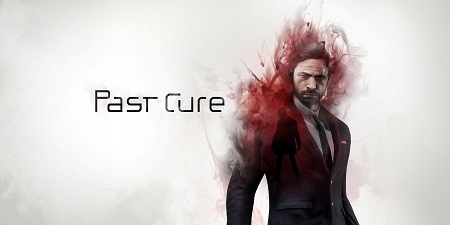
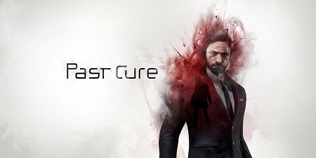
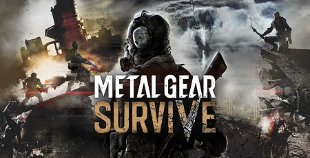
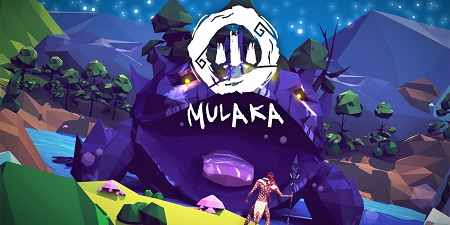
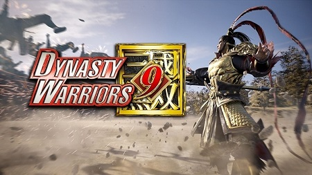
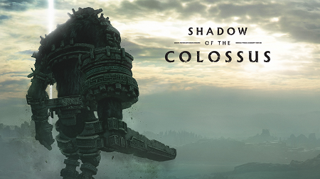

RESEÑA-Past Cure

Phantom 8 Studio es un estudio independiente y de reciente nacimiento que desde que presentó su videojuego de accion...Leer más


Sí, tal como el famoso y veloz personaje del erizo azul creado por SEGA.

Este aspecto fue fundamental para la experiencia de juego que fue muy polémica a mediados de los 90's

Se llamaría: Prince id Persia Assasin’s. Al final Ubisoft decidió que fuera un juego totalmente nuevo..

Dicho lugar fue abandonado por un incendio de una mina carbón que ocurrió en 1962. Actualmente sólo habitan 7 personas el lugar y por eso se
le conoce como pueblo fantasma.

¿Y tú qué nombre de un personaje le pondría a tu hijo o hija?

Phantom 8 Studio es un estudio independiente y de reciente nacimiento que desde que presentó su videojuego de accion...Leer más

Metal Gear es una franquicia difícil de aproximarse, porque Kojima ya no está en el liderazgo de la saga...Leer más

Mulaka es un juego complicado de criticar, porque por un lado tiene la variante de que es un juego...Leer más

La franquicia de Dynast Warriors ya lleva bastante tiempo ofreciéndonos, no sólo una serie longeva, sino también todo un...
Leer más

A la hora de que se habla de remasterizaciones y remakes normalmente un aire negativo invade nuestros cuerpos.Lo...Leer más